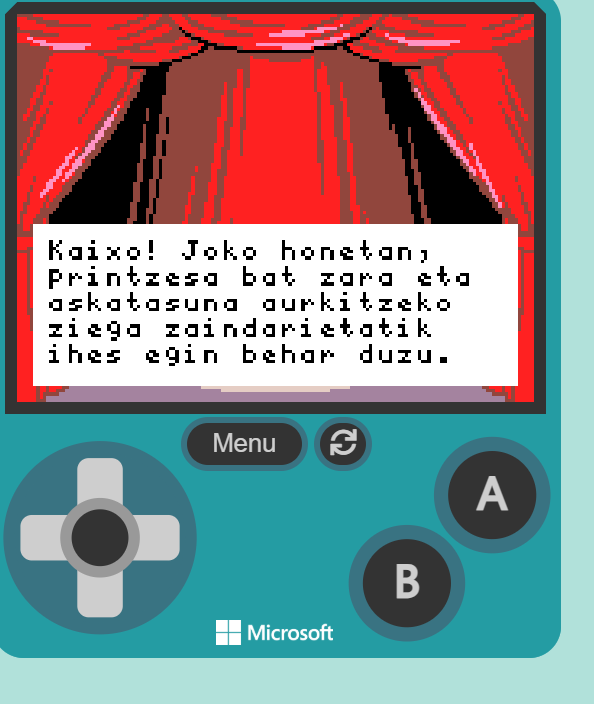
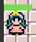
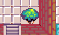

Istorioa
 Pertsonaia nagusia mazmorra batean gaztelu baten barruan harrapatuta dago. Ihes egiteko bidea bilatu behar du, bi mapak gainditzen eta etsaileak arrapatzen ez usten. Bidean oztopoak eta etsaiak aurkitzen ditu, sagussarrak denbora gustian arrapatu nahiko dute. Laguntza ematen duten objektuak aurkitzen ditu, bihotzak bizitza geitzeko eta loreak puntual geitzeko. |
Helburua
 Mazmorratik ihes egitea da helburua.
 "Teletransportatzeko objetua aurkitu behar du eta bigarren mapara pasa behar da.Etsaiak arrapatzen ez utzi edo hil behar du. Objetu guztiak lortu eta askatasuna lortu. |